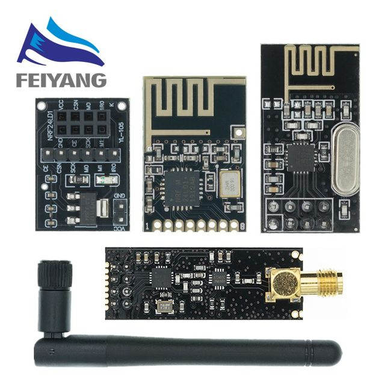
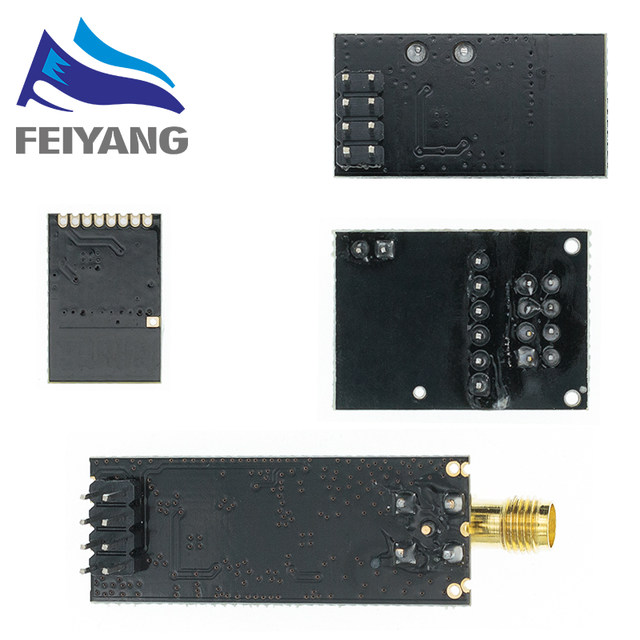
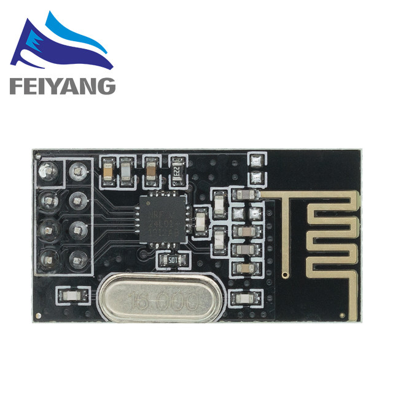
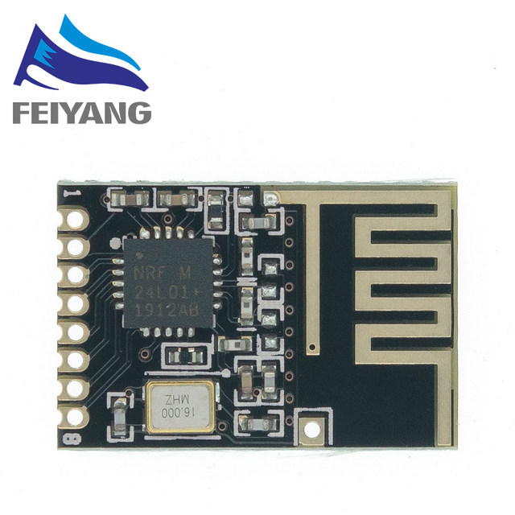
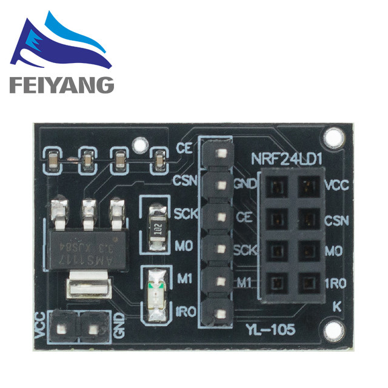
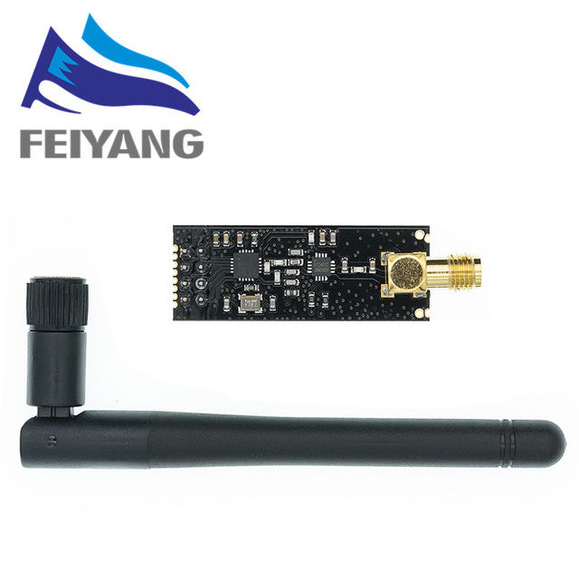

NRF24L01
Product Description:
NRF24L01 is a work in the 2.4-2.5GHz worldwide ISM band single-chip transceiver, wireless transceiver, including: the frequency generator the enhanced SchockBurstTM mode controller power amplifier crystal amplifier modulator demodulator output power channel selection and protocol set by the SPI interface to set a very low current consumption, lower current consumption mode 12.3mA Power-down mode and standby mode when in transmit mode emission power 6dBm when current consumption is 9.0mA acceptance model.
Ball to open ISM band maximum 0dBm transmit power, license-exempt use. The open 100 meters!
Support six channels of data reception
(1) low operating voltage: 1.9 ~~ 3.6V low-voltage
(2) high-rate: 2Mbps, air transmission time is very short, greatly reducing the wireless transmission of collision phenomena (software settings 1Mbps or 2Mbps air transmission rate)
Multi-frequency points: 125 frequency points, to meet the multi-point communications and frequency hopping communications needs
4 ultra-compact: built-in 2.4GHz antenna compact 15x29mm (including antenna)
(5) Low power consumption: when in answer mode communication, fast air transmission and start-up time greatly reduces the current consumption.
Low application cost: NRF24L01 integrates all RF protocol high-speed signal processing section, such as: automatically resend lost packets and automatically generate an acknowledge signal, etc. the nRF24L01 The SPI interface can take advantage of the microcontroller hardware SPI port or microcontroller I / O port to simulate the internal FIFO can be used with a variety of low-speed microprocessor interface, easy to use low-cost microcontroller.





